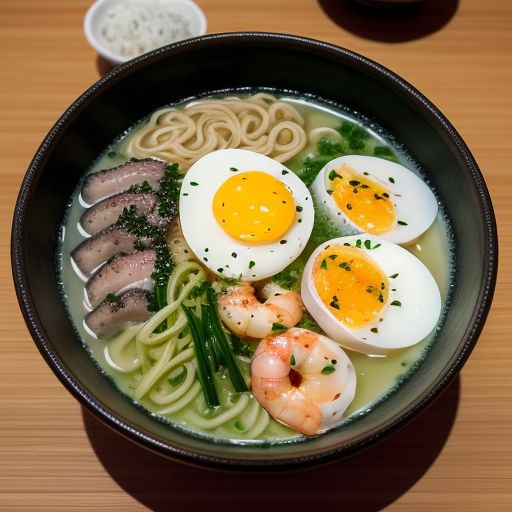

Tsunami Tonkotsu
An Oceanic Take on Tradition – Dive into a smooth, ocean-inspired broth infused with seaweed and dashi. The Tsunami Tonkotsu is topped with marinated chashu pork, soft-boiled egg, shrimp tempura, scallions, sesame seeds, and a drizzle of spicy mayo for a burst of flavor.
Price: €13.50 / ¥2,000